Contents
System Identification for Echo Cancellation
By: Rohan Rohilla
clear
close all
clc
Pure LMS
Discussion: LMS is very simple and stable algorithm. But its convergence rate depends on the eigenvalues of the autocorrelation of the input and thus make it less usable in practical situations (in other words LMS is sensitive to the scaling of its input). From the simulations it is observed that the oerder of the filter is inversely proportion to the convergece rate. To maintain the stability of the algorithm mu has to be lower than 1/(3*tr[R]).
tic comp_times = zeros(1,7); tim = cputime; H = [0.35 1 -0.35]'; % H = [0.35 1 0.35]'; w0_num = [1 0 0]'; w0_den = [1 -0.3 0.2]'; N = 15;%6,10,15 (Order of the Filter) HACR = xcorr(H,H); R = toeplitz([HACR((end+1)/2:end);zeros(N-length(H),1)]); misad = 0.2; mu = misad/trace(R); in_p_samps = 400; % number of samples var = 0.001; realizations = 600; w1 = zeros(N,in_p_samps); e = zeros(1,in_p_samps); SE = zeros(realizations,in_p_samps); for m = 1:realizations % Number of realizations v = randn(1,in_p_samps); x = filter(H',1,v)'; d_dash = filter(w0_num',w0_den',x'); d = d_dash + sqrt(var)*randn(1,in_p_samps); for n = N:in_p_samps X = x(n:-1:n-N+1); y(n) = (w1(:,n)'*X); e(n) = d(n) - y(n); w1(:,n+1) = w1(:,n) + 2*mu*e(n)*X; % Recursion Equation end SE(m,:) = e.^2; % Square Error end comp_times(1) = cputime - tim; t = 1:in_p_samps; % Mean Square Error MMSE = var*ones(in_p_samps,1); % Minimum MSE MSE = mean(SE); figure; semilogy(t,MSE,t,MMSE,'--k') title(['Pure LMS for N = ', num2str(N)]) axis([0,in_p_samps,var*0.8,100]); xlabel('NO. OF ITERATIONS') ylabel('MSE') legend('MSE Convergence','Minimum MSE'); grid figure; plot(t,w1(:,1:end-1)) xlabel('NO. OF ITERATIONS') ylabel('Coefficients') title('Pure LMS Coefficient Convergence') grid on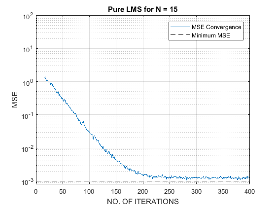 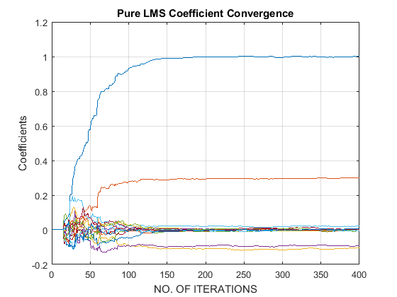
Sign LMS
Discussion: Sign LMS was developed to reduce the computational complexity of the pure LMS on the cost of convergence speed and this can be noted easily from the Bar graph at the end of the program. Sign LMS takes around 1200 iterations to converge to the optimal coefficients. This is because we can see the step-size parameter as a function of the error (mu' = mu/|e(n)|) Here initially step size is very small because of the huge e(n) but as the error decreases the step-size increases and this can be seen in the plot. For Sign LMS as well convergence rate decreasaes when we increase the order of the filter.
clearvars -except H w0_den w0_num w1 comp_times H = [0.35 1 -0.35]'; % H = [0.35 1 0.35]'; w0_num = [1 0 0]'; w0_den = [1 -0.3 0.2]'; tim = cputime; N = 15;%6,10,15 (Order of the Filter) HACR = xcorr(H,H); R = toeplitz([HACR((end+1)/2:end);zeros(N-length(H),1)]); misad = 0.010; mu = misad/trace(R); in_p_samps = 2000; % number of samples var = 0.001; realizations = 2000; w2 = zeros(N,in_p_samps); e = zeros(1,in_p_samps); SE = zeros(realizations,in_p_samps); for m = 1:realizations % Number of realizations v = randn(1,in_p_samps); x = filter(H',1,v)'; d_dash = filter(w0_num',w0_den',x'); d = d_dash + sqrt(var)*randn(1,in_p_samps); for n = N:in_p_samps X = x(n:-1:n-N+1); y(n) = (w2(:,n)'*X); e(n) = d(n) - y(n); mu_dash = mu/abs(e(n)); w2(:,n+1) = w2(:,n) + 2*mu_dash.*(e(n))*X; % Recursion Equation end SE(m,:) = (e).^2; % Square Error end comp_times(2) = cputime - tim; t = 1:in_p_samps; MSE = mean(SE); % Mean Square Error MMSE = var*ones(in_p_samps,1); % Minimum MSE figure; semilogy(t,MSE,t,MMSE,'--k') title(['Sign LMS for N = ', num2str(N)]) axis([0,in_p_samps,var*0.8,100]); xlabel('NO. OF ITERATIONS') ylabel('MSE') legend('MSE Convergence','Minimum MSE'); grid figure; plot(t,w2(:,1:end-1)) xlabel('NO. OF ITERATIONS') ylabel('Coefficients') title('Signed LMS Coefficient Convergence') grid on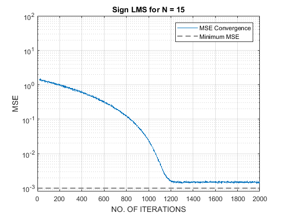 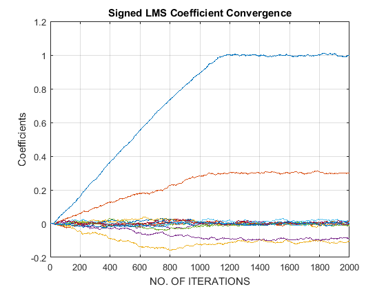
Sign-Regressor LMS
Discussion: Although built on the same line as sign LMS (to reduce the computational complexity) Sign regressor is almost as fast as pure LMS because in this case the new step size doesn't depend on the filter convergence. The step size is chosen on the basis of the average of x(n) and this gives a more homogeneous convergence. Also on a similar oberservation about the learning curve and the order of the filter can be made.
clearvars -except H w0_den w0_num w1 w2 comp_times H = [0.35 1 -0.35]'; % H = [0.35 1 0.35]'; w0_num = [1 0 0]'; w0_den = [1 -0.3 0.2]'; tim = cputime; N = 15;%6,10,15 (Order of the Filter) HACR = xcorr(H,H); R = toeplitz([HACR((end+1)/2:end);zeros(N-length(H),1)]); misad = 0.2; mu = 0.0107; %misad/trace(R) in_p_samps = 400; % number of samples var = 0.001; realizations = 1000; w3 = zeros(N,in_p_samps); e = zeros(1,in_p_samps); SE = zeros(realizations,in_p_samps); for m = 1:realizations % Number of realizations v = randn(1,in_p_samps); x = filter(H',1,v)'; d_dash = filter(w0_num',w0_den',x'); d = d_dash + sqrt(var)*randn(1,in_p_samps); for n = N:in_p_samps X = x(n:-1:n-N+1); y(n) = (w3(:,n)'*X); e(n) = d(n) - y(n); w3(:,n+1) = w3(:,n) + 2*mu*e(n)*X./abs(X); % Recursion Equation end SE(m,:) = (e).^2; % Square Error end comp_times(3) = cputime - tim; t = 1:in_p_samps; MSE = mean(SE); % Mean Square Error MMSE = var*ones(in_p_samps,1); % Minimum MSE figure; semilogy(t,MSE,t,MMSE,'--k') title(['Sign Regressor LMSfor N = ', num2str(N)]) axis([0,in_p_samps,var*0.8,100]); xlabel('NO. OF ITERATIONS') ylabel('MSE') legend('MSE Convergence','Minimum MSE'); grid figure; plot(t,w3(:,1:end-1)) xlabel('NO. OF ITERATIONS') ylabel('Coefficients') title('Sign Regressor Coefficient Convergence') grid on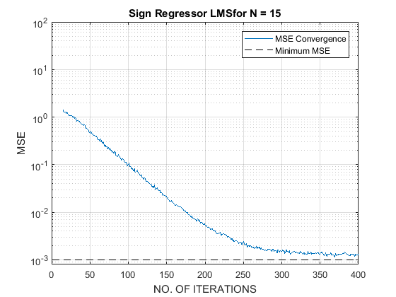 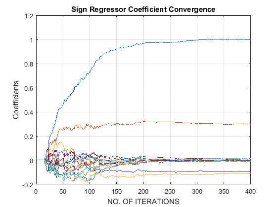
Signed-Signed LMS
Discussion: Sign-sign LMS is nothing but the mixture of sign and sign regressor algorithm. Among given two algorithms it is close to sign because its step size parameter depends on the filter convergence and therefore shows the same characteristics as the sign algorithm. Because it doesn't use the values of the error and input it is computationally simple and can be used in practical scenarios where speed is not necessary for example in medical equipment.
clearvars -except H w0_den w0_num w1 w2 w3 comp_times H = [0.35 1 -0.35]'; % H = [0.35 1 0.35]'; w0_num = [1 0 0]'; w0_den = [1 -0.3 0.2]'; tim = cputime; N = 15;%6,10,15 (Order of the Filter) HACR = xcorr(H,H); R = toeplitz([HACR((end+1)/2:end);zeros(N-length(H),1)]); misad = 0.2; mu = 0.0003; %misad/trace(R) (Step Size) in_p_samps = 4000; % number of samples var = 0.001; realizations = 600; w4 = zeros(N,in_p_samps); e = zeros(1,in_p_samps); SE = zeros(realizations,in_p_samps); for m = 1:realizations % Number of realizations v = randn(1,in_p_samps); x = filter(H',1,v)'; d_dash = filter(w0_num',w0_den',x'); d = d_dash + sqrt(var)*randn(1,in_p_samps); for n = N:in_p_samps X = x(n:-1:n-N+1); y(n) = (w4(:,n)'*X); e(n) = d(n) - y(n); w4(:,n+1) = w4(:,n) + 2*mu.*sign(e(n)*X); % Recursion Equation end SE(m,:) = e.^2; % Square Error end comp_times(4) = cputime - tim; t = 1:in_p_samps; MSE = mean(SE); % Mean Square Error MMSE = var*ones(in_p_samps,1); % Minimum MSE figure; semilogy(t,MSE,t,MMSE,'--k') title(['Signed-Signed LMS for N = ', num2str(N)]) axis([0,in_p_samps,var*0.8,100]); xlabel('NO. OF ITERATIONS') ylabel('MSE') legend('MSE Convergence','Minimum MSE'); grid figure; plot(t,w4(:,1:end-1)) xlabel('NO. OF ITERATIONS') ylabel('Coefficients') title('Signed Signed LMS Coefficient Convergence') grid on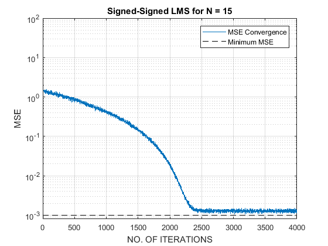 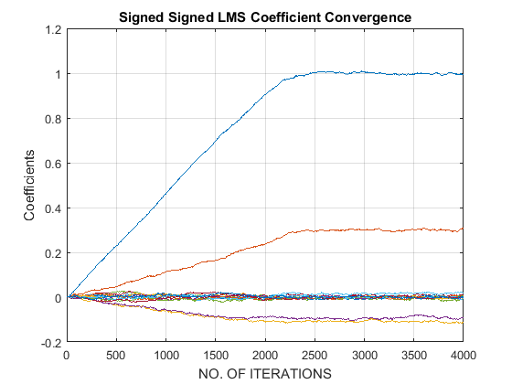
Normalized LMS
Discussion: Major Problem with Pure LMS algorithm is that its sensitivity depends on the scaling of the input. Normalized LMS takes care of this problem by normalizing the power of the input. Here mu^ and Psi are positive constants, mu^ can be thought of as a step size parameter which controls the convergence of the algorithm and Psi is added in the denominator in order to prevent a division by a small number (x'x -> Euclidean Norm). This results in a stable and a fast converging adaptation algorithm. When the value for mu^ is changed the convergence behavior changes and by that it can be said that the mu^ is directly proportional to the convergence rate (if we change mu^ from 0.5 to 1 rate of convergence increases).
clearvars -except H w0_den w0_num w1 w2 w3 w4 comp_times H = [0.35 1 -0.35]'; % H = [0.35 1 0.35]'; w0_num = [1 0 0]'; w0_den = [1 -0.3 0.2]'; tim = cputime; N = 15;%6,10,15 (Order of the Filter) mu_hat = 1;%1,0.5 sci = 0.0001; in_p_samps = 400; % number of samples var = 0.001; realizations = 600; w5 = zeros(N,in_p_samps); e = zeros(1,in_p_samps); SE = zeros(realizations,in_p_samps); for m = 1:realizations % Number of realizations v = randn(1,in_p_samps); x = filter(H',1,v)'; d_dash = filter(w0_num',w0_den',x'); d = d_dash + sqrt(var)*randn(1,in_p_samps); for n = N:in_p_samps % number of runs X = x(n:-1:n-N+1); y(n) = (w5(:,n)'*X); e(n) = d(n) - y(n); w5(:,n+1) = w5(:,n) + mu_hat*(e(n)*X)./(2*(X'*X) + sci); % Recursion Equation end SE(m,:) = e.^2; % Square Error end comp_times(5) = cputime - tim; t = 1:in_p_samps; MSE = mean(SE); % Mean Square Error MMSE = var*ones(in_p_samps,1); % Minimum MSE figure; semilogy(t,MSE,t,MMSE,'--k') title(['Normalized LMS with Mu Hat = ', num2str(mu_hat),' and N = ',num2str(N)]) axis([0,in_p_samps,var*0.8,100]); xlabel('NO. OF ITERATIONS') ylabel('MSE') legend('MSE Convergence','Minimum MSE'); grid figure; plot(t,w5(:,1:end-1)) xlabel('NO. OF ITERATIONS') ylabel('Coefficients') title('NLMS Coefficient Convergence') grid on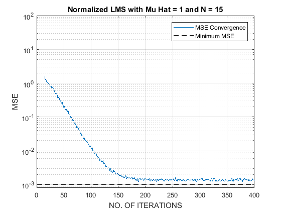 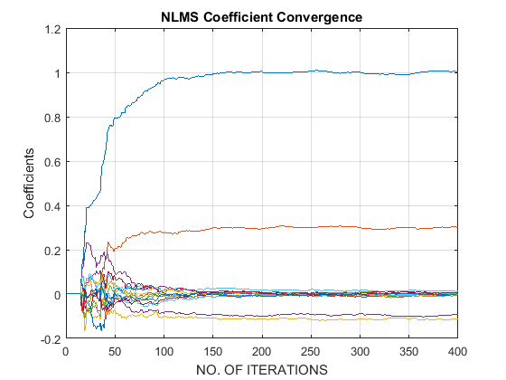
Affine Projection LMS
Discussion: Affine Projection is a generalized form or Normalized LMS which can also be called as the Orthogonal Projection LMS. Here mu^ and Psi are used for the same purposes as in the NLMS algorithm. From the simulations it can be seen that the convergence rate increases as we increase M. For M = 1 it behaves like Normalized LMS. Computation time of APLMS for the simulation is very high as well (Just like its computation complexity).
clearvars -except H w0_den w0_num w1 w2 w3 w4 w5 comp_times H = [0.35 1 -0.35]'; % H = [0.35 1 0.35]'; w0_num = [1 0 0]'; w0_den = [1 -0.3 0.2]'; tim = cputime; N = 15;%10,6,15 (Order of the Filter) mu_hat = 0.5;%1 psi = 1e-4; M = 2;%2,4,6,8 % number of colums w0_num = [1 0 0]'; w0_den = [1 -0.3 0.2]'; in_p_samps = 800; var = 0.001; realizations = 600; for p = 1:realizations v = randn(1,in_p_samps)'; x = filter(H,1,v);% Generation of input x(n) d = filter(w0_num,w0_den,x)+sqrt(var)*randn(in_p_samps,1); XAF = zeros(N,M); w6 = zeros(N,in_p_samps); for m = N+M:in_p_samps for k = 1:M XAF(:,k) = x(m-k+1:-1:m-k+1-N+1); end E = d(m:-1:m-M+1) - XAF'*w6(:,m); w6(:,m+1) = w6(:,m) + mu_hat*XAF*inv((XAF'*XAF + psi*eye(M)))*E; e(m) = E(1)'*E(1); end SE(p,:) = e'; end comp_times(6) = cputime - tim; t = 1:in_p_samps; MSE = mean(SE); % Mean Square Error MMSE = var*ones(in_p_samps,1); % Minimum MSE figure; semilogy(t,MSE,t,MMSE,'--k') title(['Affine Projection LMS with Mu^ = ', num2str(mu_hat),' and M = ' num2str(M)]) axis([0,in_p_samps,var*0.8,100]); xlabel('NO. OF ITERATIONS') ylabel('MSE') legend('MSE Convergence','Minimum MSE'); grid figure; plot(t,w6(:,1:end-1)) xlabel('NO. OF ITERATIONS') ylabel('Coefficients') title('APLMS Coefficient Convergence') grid on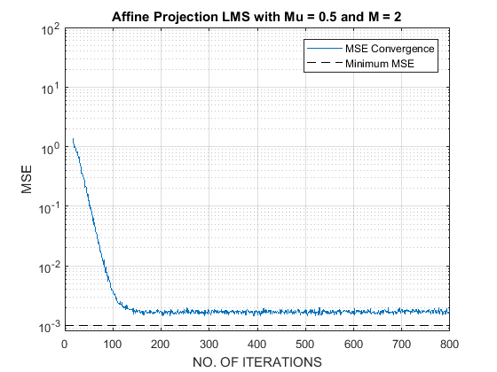 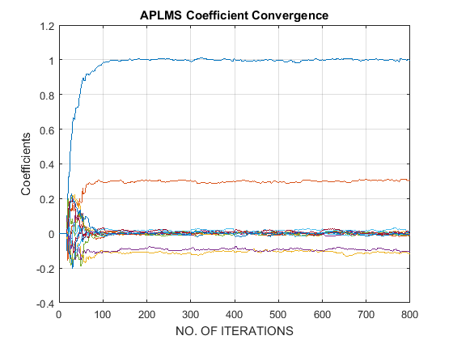
Recursive Least Squares
Discussion: RLS is different from the rest of the algorithms because unlike others it is not based on stochastic behavior of the processes. It is assumed that all the processes are ergodic and thus their time average is taken instead of the ensemble average. Thus RLS is a deterministic algorithm. This property of RLS makes it more usable in real situations. It is observed from the simulations that the computation time of RLS algorithm is better than APLMS and Sign LMS, and it takes the least number of iterations to converge (for a particular set of parameters). From the plots it is also verified that the fast convergence starts right after the N samples of input. This algorithm was tested for different values of delta and no change in the convergence rate and computation time was observed. The variable Lambda is forgetting factor and it governs the convergence of the algorithm. For a lambda as low as 0.1 the algorithm diverges and if the lambda value is increased the MSE decreases. One strange thing I observed in the simulation was that, if I increase the value of Lambda to 0.9 the MSE decreases, this time even lower than the minimum MSE!!
clearvars -except H w0_den w0_num w1 w2 w3 w4 w5 w6 comp_times H = [0.35 1 -0.35]'; % H = [0.35 1 0.35]'; w0_num = [1 0 0]'; w0_den = [1 -0.3 0.2]'; tim = cputime; N = 15;%10,6,15 (Order of the Filter) delta = 1e0;% 1e-3,1e-2,1e-1,1 lambda = 0.8; % Forgetting Factor var = 0.001; in_p_samps = 400; sd = sqrt(0.001); realizations = 600; s = (1/delta)*eye(15); w7 = zeros(15,(in_p_samps)); for n = 1:realizations % Deifferent Realizations v = randn(1,in_p_samps)'; x = filter(H,1,v);% Generation of input x(n) d = filter(w0_num,w0_den,x) + (sd)*rand(in_p_samps,1); u = zeros(N,1); s = (1/delta)*eye(15); y = zeros(1,in_p_samps); e = zeros(1,in_p_samps); xaf = zeros(N,1); n_temp = zeros(N); k = zeros(1,in_p_samps); for m = N:in_p_samps xaf = x(m:-1:m-N+1); u = s*xaf; k= u./(lambda+(xaf'*u)); y(m) = w7(:,m)'*xaf; e(m) = d(m) - y(m); w7(:,m+1) = w7(:,m) + k*e(m); % Recursion Equation % n_temp = (lambda^-1)*(s - k*xaf'*s); % to maintain symmetry % st = triu(n_temp,1);d_s = eye(15).*diag(n_temp); % s = st + d_s + st'; % Making Symmetric s matrix (Psi Inverse matrix) s = (lambda^-1)*(s - k*xaf'*s); % Comment this end SE(n,:) = e.^2; % Square Error end comp_times(7) = cputime - tim; t = 1:in_p_samps; MSE = mean(SE); % Mean Square Error MMSE = var*ones(in_p_samps,1); % Minimum MSE figure; semilogy(t,MSE,t,MMSE,'--k') title(['RLS with \delta = ', num2str(delta),' and \lambda = ' num2str(lambda)]) axis([0,in_p_samps,var*0.8,100]); xlabel('NO. OF ITERATIONS') ylabel('MSE') legend('MSE Convergence','Minimum MSE'); grid figure; plot(t,w7(:,1:end-1)) xlabel('NO. OF ITERATIONS') ylabel('Coefficients') title('RLS Coefficient Convergence') grid on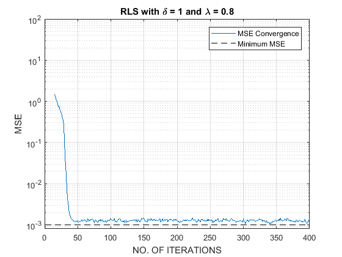 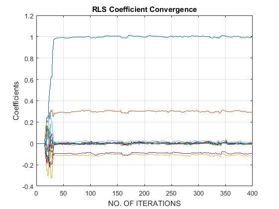
Frequency Response Comparision
lms = w1(:,end); % Modeled System Coefficients for LMS slms = w2(:,end); % Modeled System Coefficients for Sign LMS srlms = w3(:,end); % Modeled System Coefficients for Sign Regressor LMS sslms = w4(:,end); % Modeled System Coefficients for Signed-Signed LMS nlms = w5(:,end); % Modeled System Coefficients for Normalized LMS aplms = w6(:,end); % Modeled System Coefficients for Affine Projection LMS rls = w7(:,end); % Modeled System Coefficients for Recursive Lear Squares [LMS,wlms]=freqz(lms,1); [SLMS,wslms]=freqz(slms,1); [SRLMS,wsrlms]=freqz(srlms,1); [SSLMS,wsslms]=freqz(sslms,1); [NLMS,wnlms]=freqz(nlms,1); [APLMS,waplms]=freqz(aplms,1); [RLS,wrls]=freqz(rls,1); [OR_FILT,wor_filt] = freqz(w0_num,w0_den); % Frequency Response of the Original IIR filter figure; plot(wor_filt/(2*pi),20*log10(abs(OR_FILT)),wlms/(2*pi),20*log10(abs(LMS)),'linewidth',2) legend('Original IIR Filter','Regular LMS') ylabel('Log_magnitude'); xlabel('Normalized Frequency'); grid on figure; plot(wor_filt/(2*pi),20*log10(abs(OR_FILT)),wslms/(2*pi),20*log10(abs(SLMS)),'linewidth',2) legend('Original IIR Filter','Sign LMS') ylabel('Log_magnitude'); xlabel('Normalized Frequency'); title('Frequency Response Comparision Between the Original IIR filter and the Identified Filter') grid on figure; plot(wor_filt/(2*pi),20*log10(abs(OR_FILT)),wsrlms/(2*pi),20*log10(abs(SRLMS)),'linewidth',2) legend('Original IIR Filter','Sign Regressor LMS') ylabel('Log_magnitude'); xlabel('Normalized Frequency'); title('Frequency Response Comparision Between the Original IIR filter and the Identified Filter') grid on figure; plot(wor_filt/(2*pi),20*log10(abs(OR_FILT)),wsslms/(2*pi),20*log10(abs(SSLMS)),'linewidth',2) legend('Original IIR Filter','Sign Sign LMS') ylabel('Log_magnitude'); xlabel('Normalized Frequency'); title('Frequency Response Comparision Between the Original IIR filter and the Identified Filter') grid on figure; plot(wor_filt/(2*pi),20*log10(abs(OR_FILT)),wnlms/(2*pi),20*log10(abs(NLMS)),'linewidth',2) legend('Original IIR Filter','Normalized LMS') ylabel('Log_magnitude'); xlabel('Normalized Frequency'); title('Frequency Response Comparision Between the Original IIR filter and the Identified Filter') grid on figure; plot(wor_filt/(2*pi),20*log10(abs(OR_FILT)),waplms/(2*pi),20*log10(abs(APLMS)),'linewidth',2) legend('Original IIR Filter','Affine Projection LMS') ylabel('Log_magnitude'); xlabel('Normalized Frequency'); title('Frequency Response Comparision Between the Original IIR filter and the Identified Filter') grid on figure; plot(wor_filt/(2*pi),20*log10(abs(OR_FILT)),wrls/(2*pi),20*log10(abs(RLS)),'linewidth',2) legend('Original IIR Filter','Regular LMS') ylabel('Log_magnitude'); xlabel('Normalized Frequency'); title('Frequency Response Comparision Between the Original IIR filter and the Identified Filter') grid on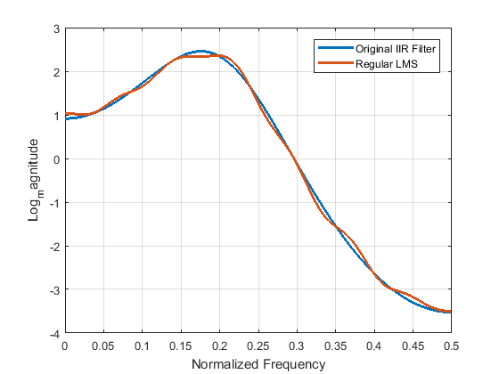 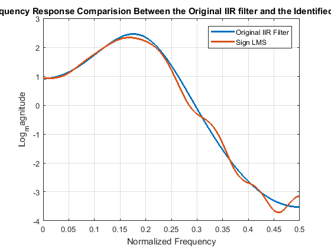 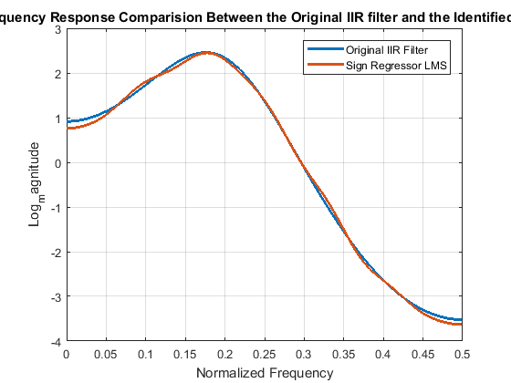 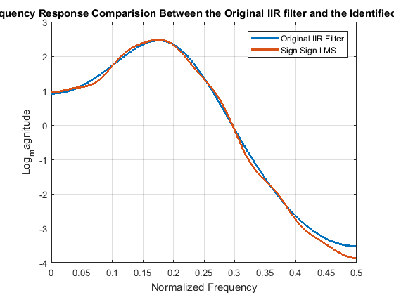
 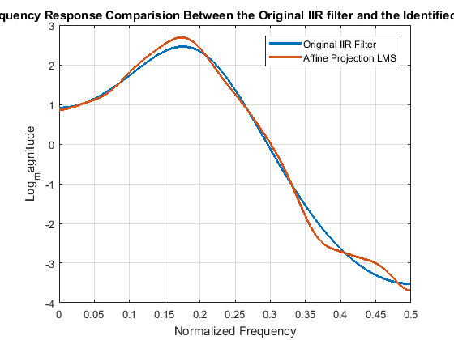 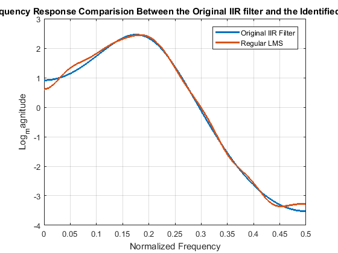
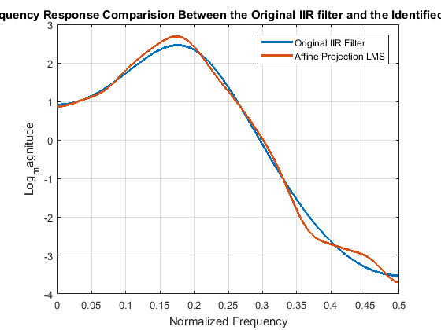 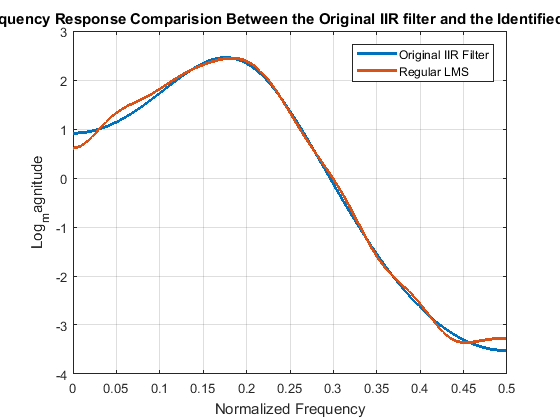 Computation Time Comparision
bar_name = {'LMS','SLMS','SRLMS','SSLMS','NLMS','APLMS','RLS'};
figure;
bar(comp_times)
title('Convergence Time for each Algorithm (in s)')
ylabel('Time in Seconds')
xlabel('Algorithms')
grid
set(gca,'xticklabel', bar_name)
toc
Elapsed time is 54.076545 seconds.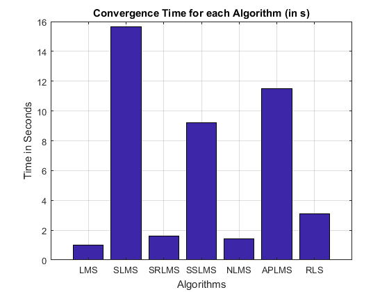
Comparision and Discussion of all the Algorithms
% At the end we can pick a winner in terms of computation time, computation % complexity, number of iterations required (and also on number of % realization required, but in practical situations we only have one % realization so there is not point of taking number of realizations as a % performance metric). In case of computation complexity it is well known % that the sign-sign LMS beats all of these algorithms (from the textbook % Adaptive Filters theory and application). But on the other hand it takes % more iterations than the rest of the algorithms to converge. % Similar to sign sign lms, sign lms and sign regressor also takes more % than reasonable iterations. In their defense there job was not to reduce % the number of iteration but to reduce the computation complexity. % For faster convergence I would pick NLMS over any of the give algorithms % because it took significantly less time and iterations. Although Pure LMS % beats NLMS when it comes to computation time but it takes more iterations % than NLMS as well and the difference in timings is not that big. Again % there is no free lunch! NLMS is beautiful but it based on statistical % parameters and thus requires more realizations than 1 (and that’s all what % we have got in reality). This is where RLS comes into play. It is purely % deterministic and speed is comparable as well. With this facility comes % the cost and that is more computations (RLS requires 4N^2 multiplications % and 3N^2 additions). % Frequency responses of the identified filters (from each algorithm) are % also plotted and compared with the original IIR filter. All of them % matches very well, except that a few have ripple in the stop band and % in the pass band. As the Filters are just the approximation to the % original filter this kind of side effect is bound to come across.